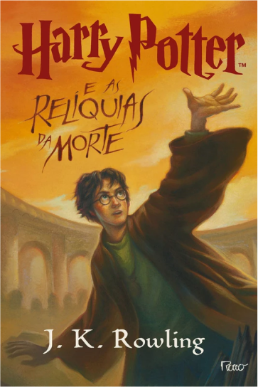
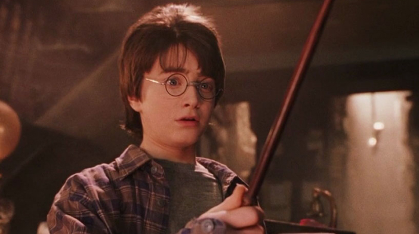
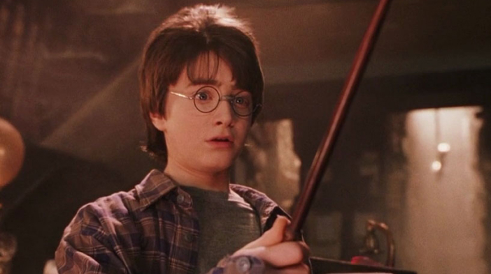

Livro 7
Harry Potter e as Relíquias da Morte
Resumo
"Harry Potter e as Relíquias da Morte" é o sétimo e último livro da série "Harry Potter", escrita por J.K. Rowling. A história começa logo após a morte de Dumbledore e a tomada de controle do Ministério da Magia pelos seguidores de Voldemort. Harry, Ron e Hermione decidem deixar a escola para procurar as Horcruxes, objetos que contêm fragmentos da alma de Voldemort e precisam ser destruídos para enfraquecê-lo. Ao longo de sua jornada, os três amigos enfrentam muitos perigos e obstáculos, incluindo ataques de Comensais da Morte, a traição de um antigo aliado e a descoberta de uma antiga profecia sobre a morte de Harry e de Voldemort. Eles também aprendem sobre as lendárias Relíquias da Morte: a Varinha das Varinhas, a Pedra da Ressurreição e a Capa da Invisibilidade.
No final, Harry e seus amigos descobrem a localização final das Horcruxes e lutam contra os Comensais da Morte em uma batalha épica em Hogwarts. Vários personagens importantes morrem na batalha, incluindo Fred Weasley, Remus Lupin e Ninfadora Tonks.Finalmente, Harry enfrenta Voldemort em uma luta final e vence usando a Varinha das Varinhas, que é uma das Relíquias da Morte. Harry, Ron e Hermione conseguem destruir todas as Horcruxes e Voldemort é finalmente derrotado. O livro termina com um epílogo ambientado dezenove anos depois, mostrando Harry e seus amigos adultos, casados e com filhos, levando seus próprios filhos para a plataforma 9 3/4, para que eles possam ir para Hogwarts.
Posters dos Filmes

Trailers
Curiosidades
- O livro foi lançado em 2007, e a expectativa em torno do lançamento foi enorme. A editora do livro tomou medidas extremas para evitar o vazamento do conteúdo, incluindo o uso de seguranças armados para proteger as cópias do livro e a impressão de código de barras exclusivos para cada loja que vendia o livro.
- Durante a escrita do livro, J.K. Rowling criou um falso título para despistar os fãs e jornalistas que tentavam adivinhar o nome do livro. O título falso era "Harry Potter e o Criador das Trevas Renascido".
- O epílogo do livro, que mostra Harry e seus amigos como adultos, foi escrito por J.K. Rowling anos antes de ela terminar de escrever o livro. Ela queria ter certeza de que sabia onde a história estava indo antes de escrever o final, mas sabia desde o início como a história terminaria.
- Quando o livro foi lançado, a editora Scholastic organizou uma série de festas de lançamento em todo o mundo para os fãs da série. Em Nova York, a festa de lançamento aconteceu no Museu de História Natural e contou com atividades temáticas, como uma exibição de animais mágicos e uma caça ao tesouro pelos corredores do museu.
Galeria de imagens

 
